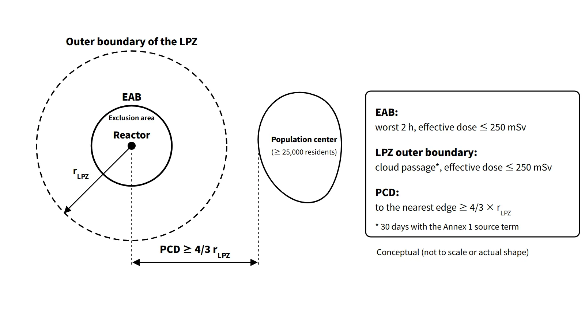

Operation, Regulation & Quality · C-OP-006
NPP Site Selection Criteria — Siting Items and the Exclusion Area, Low Population Zone and Population Center Distance
How a reactor site is judged: external hazards, hypothetical-accident dose at the EAB and LPZ, separation from population centers and the feasibility of emergency plans.
Site selection criteria judge whether a place for a reactor facility (1) does not compromise plant safety through external hazards such as earthquakes, floods and aircraft crashes, (2) keeps public exposure in a hypothetical accident below the limits, and (3) allows emergency plans to be carried out.
Site evaluation looks in two directions: "the effect of the site on the plant" (external hazards → design-basis inputs) and "the effect of the plant on the public" (dispersion of radioactive material, population distribution). At the construction permit stage the site is reviewed through Chapter 2, "Site characteristics", of the Preliminary Safety Analysis Report (PSAR).
Principle and mechanism
The siting items
| Item | Requirement | US example |
|---|---|---|
| Geology and seismology | Low likelihood of earthquakes and crustal movement, no surface collapse or subsidence, stable slopes and foundation | 10 CFR 100.23 |
| Siting restriction | Distance from population centers; public dose in an accident meets the criteria | 10 CFR 100.11, 50.34 |
| Meteorology | Typhoons, heavy snow, heavy rain, tornadoes; atmospheric dispersion and dilution | 10 CFR 100.21 |
| Hydrology and oceanography | Dam failure and river flooding; tsunami, sea level and waves; dispersion in water; securing industrial and cooling water | RG 1.27 (cooling water) |
| Human-induced events | No effect from accidents at hazardous industrial facilities or transport | 10 CFR 100.21 |
| Emergency planning | Area where radiological emergency plans can be carried out | 10 CFR 100.21 |
| Multiple units | No interaction between units; exclusion area calculated per unit, then the outer envelope | — |
Detailed criteria differ by country; the US references are given as examples, and IAEA SSR-1 sets the corresponding international site evaluation requirements.
![Aerial view of a coastal nuclear power plant site with numbered badges: 1 ground and faults, 2 site fence, 3 weather and dispersion, 4 sea and cooling water, 5 industry and aviation, 6 public and emergency planning, 7 multiple units; beside it a table matching each siting topic to what is checked and to a US reference as an example: 10 CFR 100.23 for geology, 10 CFR 100.11 and 50.34 for siting restriction, 10 CFR 100.21 for meteorology, human-induced events and emergency planning, RG 1.27 for the ultimate heat sink, and none for multiple units](../../assets/images/concepts/c-op-006-site-selection-criteria/fig1-site-criteria-map.webp)
Siting restriction: exclusion area, low population zone and population center distance
The size of the site is set by "the dose a person at the boundary would receive in a hypothetical large accident." In the United States, for example, 10 CFR 50.34(a)(1)(ii)(D) sets 25 rem (250 mSv) total effective dose equivalent (TEDE); the older 10 CFR 100.11 criteria were 25 rem (250 mSv) whole body and 300 rem (3 Sv) thyroid.
- Exclusion area: the area where the licensee controls access and residence. At its boundary (EAB, exclusion area boundary) the dose must be no more than 250 mSv effective dose over the 2 hours after the accident that give the highest exposure. It is not automatically the same line as the fence or the property boundary.
- Low population zone (LPZ): the area outside the exclusion area with few enough residents that protective actions are feasible in an accident. At its outer boundary the dose must be no more than 250 mSv effective dose over the entire period of passage of the radioactive cloud.
- Population center distance (PCD): the distance from the reactor to the nearest boundary of an area with about 25,000 or more residents (10 CFR 100.3). It is not a zone set directly by dose but a minimum separation linked to the LPZ distance: PCD ≥ 1⅓ (= 4/3) × the distance to the outer boundary of the LPZ. For example, if the LPZ is 6 km, the PCD must be at least 8 km.
Typical dose-assessment conditions:
- The core inventory is taken at its maximum for maximum power, enrichment and burnup.
- The release fractions consider core melting (an alternative-source-term type of source term for a large LOCA).
- The atmospheric dispersion factor is the accident χ/Q from the site meteorology.
- The pathways are external exposure from the cloud and inhalation; the breathing rate for 0–8 h is 3.5×10−4 m3/s.
- The EAB dose is roughly "release × χ/Q × dose coefficient", so it falls with greater distance and better dispersion.
![Logarithmic distance axis from 0.5 to 500 km with rows for siting restriction (example LPZ 6 km and PCD at least 8 km by the 4/3 rule; EAB has no fixed distance), geology and seismic survey radii at 1, 8, 40 and 320 km with fault activity investigated within 8 km, human-induced event surveys at 8 km for explosions and chemicals and 16 km for aviation, RG 4.7 population density guidance to 20 miles or about 32 km at 500 per square mile or about 193 per square kilometre, and emergency planning zones PAZ and UPZ at illustrative positions; a side card lists EAB and LPZ limits of 250 mSv effective dose and PCD of at least 4/3 of the LPZ radius](../../assets/images/concepts/c-op-006-site-selection-criteria/fig2-site-distance-radii.webp)
External-hazard evaluation radii
- Geology and seismology: investigations are divided into the regional 320 km, the site vicinity 40 km and 8 km, and the site area 1 km plus the foundation. Faults within 8 km are investigated for activity. In the US definition (10 CFR 100 App. A), a capable fault is one with movement at or near the ground surface at least once in the past 35,000 years, or recurrent movement within the past 500,000 years; other countries set their own time windows. If the site lies within the zone of surface faulting, safety must be demonstrated. The SSE is given as horizontal and vertical response spectra.
- Human-induced events: aircraft crashes are investigated within 16 km, and explosions and hazardous-chemical releases within 8 km. For hazardous chemicals the separation distance to the control room and the toxicity limit (based on 30-minute exposure) are assessed. Safety is demonstrated by the scale of the event or its probability.
- Hydrology and oceanography: safety-related facilities must sit above, or be protected against, the design-basis flood level (river flooding, dam failure, tsunami, storm surge, tide). The cooling water source is also checked for its function as the ultimate heat sink (UHS) (US RG 1.27: 30 days of cooling).
What it means in a plant
- Design inputs: the site SSE, design-basis flood level, design wind speed (typhoons, tornadoes) and aircraft-impact loads all come from site evaluation. Change the site and the design inputs change.
- Coastal sites: plants on the coast rely on large-volume seawater cooling, so protection against tsunami and storm surge is central. Reinforcing coastal barriers after Fukushima is an example.
- Multi-unit sites: where several units share one site, the unit-to-unit interaction check and the outer exclusion-area boundary are applied in practice.
- SMRs: some assessments say that if alternative source terms lower the calculated dose, the LPZ and PCD shrink, which could open the way to siting near industrial complexes. The radiological emergency planning zones (PAZ, UPZ), however, are set separately in emergency planning.
Site criteria for other facilities: disposal and interim storage
- Low- and intermediate-level waste disposal facility: typical siting requirements are:
- strata and sorption that retard radionuclide migration
- low groundwater velocity and long delay time
- a location above flood level and not adjacent to active faults
- no water-source protection areas
- deficient properties compensated by engineered barriers
- Spent fuel interim storage facility: typical conditions are separation from population centers, no active faults nearby, and conditions on aircraft, hazardous materials, dispersion and flooding.
Regulatory and design criteria
The criteria below are examples from US NRC regulations and guides and from IAEA safety standards.
| Basis | Key point |
|---|---|
| 10 CFR 100.3 / 100.11 / 50.34(a)(1)(ii)(D) | PCD definition; old EAB and LPZ criteria (25 rem whole body, 300 rem thyroid); current 25 rem TEDE |
| 10 CFR 100.21 / 100.23 | Non-seismic siting criteria; geologic and seismic siting criteria |
| NRC RG 4.7 Rev. 4 (2024) | Recommends a cumulative average of no more than 500 persons/mi² (about 193 persons/km²) at each radius within 20 miles |
| NRC RG 1.27 | Ultimate heat sink, 30 days of cooling |
| IAEA SSR-1 (2019), SSG-9, 18, 35 and 79 | Site evaluation requirements and hazard-specific guides |
Easily confused pairs
| Exclusion area (EAB) | Low population zone (LPZ) | Emergency planning zones (PAZ, UPZ) | |
|---|---|---|---|
| Basis | Siting dose criteria | Siting dose criteria | Emergency preparedness |
| Purpose | Site size, access control | Feasibility of public protective actions | Public protection plans in an emergency |
| Criterion | Worst 2 h, 250 mSv | Cloud passage, 250 mSv; PCD ≥ 1⅓ LPZ | Planning radii set in emergency plans |
| Nature | Hypothetical-accident dose criterion | Hypothetical-accident dose criterion | Planning zone (not a dose limit) |
250 mSv is neither a public dose limit nor an evacuation criterion. It is a reference value for gauging the separation of a site against a hypothetical accident of very low probability (footnote to 10 CFR 100.11).
Key points at a glance
- Definition: site suitability criteria covering plant safety against external hazards, public dose in an accident and feasibility of emergency plans.
- Two directions: the effect of the site on the plant (design-basis inputs) and of the plant on the public (dispersion, population).
- Seven items: geology and seismology / siting restriction / meteorology / hydrology and oceanography (including cooling water) / human-induced events / emergency planning / multiple units.
- Exclusion area boundary (EAB): worst 2 h, effective dose ≤ 250 mSv (US: 25 rem TEDE).
- Low population zone: outer boundary, entire cloud passage period, ≤ 250 mSv.
- Population center distance: to the nearest boundary of an area of about 25,000 or more people; PCD ≥ 1⅓ × LPZ distance.
- Survey radii: geology 320, 40, 8 and 1 km; aircraft survey 16 km; explosion and chemical survey 8 km.
- Separate systems: the EAB and LPZ are siting dose criteria; the PAZ and UPZ are emergency planning zones.
- International: 10 CFR 100.21 and 50.34, RG 4.7, IAEA SSR-1.
